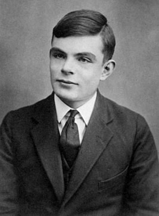

Алан Мэтисон Тьюринг

Алан Мэтисон Тьюринг (23 июня 1912 года - 7 июня 1954 года) - английский математик, логик, криптограф, оказавший существенное влияние на развитие информатики.
Алан Матисон Тьюринг (Alan Mathison Turing) родился 23 июня 1912 года в Лондоне в семье колониального чиновника, служившего в Индии. Его родители ‑ Юлиус Мэтисон Тьюринг (Julius Mathison) и Этель Сара Стоуни (Ethel Sara Stoney) познакомились и обвенчались в Индии. Алан Тьюринг учился в престижной Шерборнской школе (Sherborne Public School) в Англии, где проявил незаурядные способности к математике и химии, затем в 1931 году поступил в Кингз‑колледж (King's College) Кембриджского университета. В 1935 году он защитил диссертацию "Центральная предельная теорема теории вероятности" (которую он самостоятельно переоткрыл, не зная об аналогичной предшествующей работе) и был избран членом Научного общества колледжа. В этом же году он впервые начал работать в области математической логики и проводить исследования, которые уже через год привели к выдающимся результатам. В своей работе "О вычислимых числах, с приложением к проблеме разрешимости" (On the Computable Numbers, with an Application to the Entscheidungsproblem, 1936) Тьюринг ввел математическое понятие абстрактного эквивалента алгоритма, или вычислимой функции, получившее затем название "машины Тьюринга". Это был проект устройства, имеющего все основные свойства современной информационной системы: программное управление, память и пошаговый способ действий. "Машина Тьюринга" открыла дискуссию по теории автоматов и создала теоретическую базу для работы цифровых компьютеров, которые появились в 1940 е годы. Тьюринг продолжил учебу в США - в Принстонском университете, где под руководством американского математика и логика Алонзо Чёрча (Alonzo Church) в 1938 году получил степень доктора философии. Затем он вернулся в Великобританию и получил стипендию Кингз‑колледжа для занятий логикой и теорией чисел. В это же время началось его конфиденциальное сотрудничество с правительственной Школой кодов и шифров (Government Code and Cypher School) в Блечли‑Парке, где он еще до войны участвовал в работах по раскрытию немецких шифров. В 1939 году британское военное ведомство поставило перед Тьюрингом задачу разгадать секрет "Энигмы" - специального устройства, использовавшегося для шифровки радиограмм в германском военно‑морском флоте и в "люфтваффе". Британская разведка раздобыла это устройство, но расшифровывать перехваченные радиограммы немцев не удавалось. Тьюринг пригласил в созданный им отдел нескольких друзей‑шахматистов. Уже через полгода было разработано устройство, названное им "Бомбой", которое позволяло читать практически все сообщения "люфтваффе". А спустя ещё год был "взломан" и более сложный вариант "Энигмы", использовавшийся нацистскими подводниками. Это во многом предопределило военные успехи британского флота. Тьюринг занимался также разработкой шифров для переписки премьер-министра Великобритании Уинстона Черчилля и президента США Франклина Рузвельта, проведя период с ноября 1942 года по март 1943 года в США. Заслуги Алана Тьюринга были по достоинству оценены: после разгрома Германии он был удостоен звания кавалера Ордена Британской империи 4 й степени. В 1945 году Тьюринг был принят в Национальную физическую лабораторию в Лондоне, где возглавил разработку большого автоматического вычислительного устройства АСЕ (Automatic Computing Engine). Разработанные в 1947 году Тьюрингом "Сокращенные кодовые инструкции" (Abbreviated Code Instructions) положили начало созданию, исследованию и практическому использованию языков программирования. В 1948 году ученый был назначен заместителем Макса Ньюмена (Max Newman), директора вычислительной лаборатории Манчестерского университета, где создавался компьютер с самой большой по тому времени памятью - манчестерская автоматическая цифровая машина, или "Мадам" (Manchester Automatic Digital Machine), как ее называли в прессе. Тьюринг написал для нее несколько программ, пользуясь буквенно‑цифровым кодом. Тьюринг считается основоположником не только вычислительной техники, но также и искусственного интеллекта. Исключительную роль в развитии этого исследовательского направления сыграла небольшая статья "Вычислительные машины и разум" (Computing Machinery and Intellegence), опубликованная в журнале Mind в 1950 году и впоследствии многократно перепечатывавшаяся, в которой Тьюринг предложил ставший знаменитым мысленный эксперимент (тест Тьюринга) ‑ операциональный способ решения вопроса "мыслит ли машина?". В 1951 году Алан Тьюринг стал членом Королевского научного общества. В конце жизни он занялся вопросами биологии, а именно, разработкой химической теории морфогенеза. Эта работа осталась незаконченной. Предварительный доклад 1952 года и отчет, который появился уже после его смерти, описывают только первые наброски этой теории. В 1952 году Тьюринг попал под суд по обвинению в нетрадиционной сексуальной ориентации. Вскоре скандал стал достоянием публики, ученый подвергся осуждению и потерял право работать в области криптографии. 8 июня 1954 года Тьюринг был найден мертвым в своем доме в Уилмслоу близ Манчестера. Смерть наступила 7 июня от отравления цианидом и была признана самоубийством. В честь Алана Тьюринга Ассоциация по вычислительной технике (Association for Computing Machnery, АСМ) учредила премию его имени. Первым лауреатом премии Тьюринга в 1966 году стал Алан Перлис, один из создателей языка программирования Алгол, первый президент АСМ.